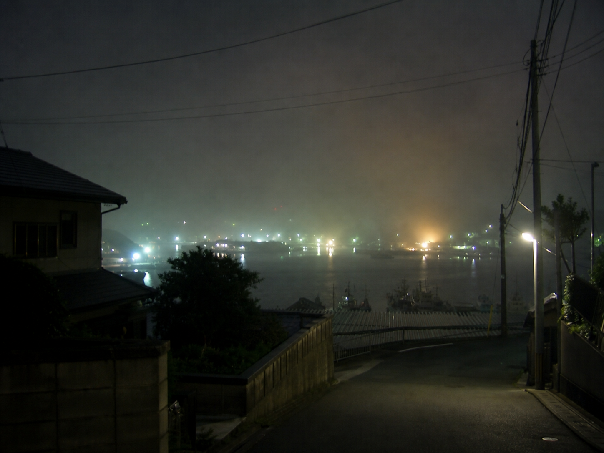

夜市の帰り、港の奥だけ変に明るく見えました。式典の準備だと思ったけれど、広場の正面ではなく旧資料館の裏手のほう。
図書館前から坂を下りる人影が見えた気がします。霧で輪郭は分かりませんでした。
携帯の写真は暗すぎたので明るさを上げています。奥の白い反射が、灯台の光にしては低すぎるのが気になりました。
追記: コメント欄で「その時間は第二倉庫前が通行止め」と教えてもらいました。
2006年9月17日 19:08

夜市の帰り、港の奥だけ変に明るく見えました。式典の準備だと思ったけれど、広場の正面ではなく旧資料館の裏手のほう。
図書館前から坂を下りる人影が見えた気がします。霧で輪郭は分かりませんでした。
携帯の写真は暗すぎたので明るさを上げています。奥の白い反射が、灯台の光にしては低すぎるのが気になりました。